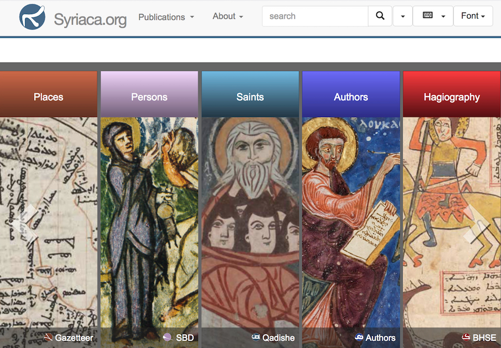

Consulting
I am an independent digital library consultant with 10 years experience
building digital
library applications with XML technologies, including XQuery, XSLT, and native XML databases.
Selected Projects
Selected projects from the past 5 years.

Syriaca.org
A digital project for the study of Syriac literature, culture, and history.
Services
With expertise in:
- Content Management Systems: ContentDM, Omeka, eXist, XTF
- Metadata Standards: Dublin Core, DDI, EAD, METS, MODS, MADS, MARCXML, TEI, RDF
- Programing: HTML, CSS, JavaScript, JQuery, PHP, XSLT, XSL-FO, XQuery, XForms, SPARQL, D3JS visualizations
Sample services:
- Metadata crosswalks and transformations
- Digital library software installation and customization
- Archivists' Toolkit XSLT customization
- XSLT programing
- XQuery programing
- XForms for library metadata standards (MODS, Dublin Core ect.)
- Customization of XSLT stylesheets for Archivists' Toolkit HTML and PDF output.
Additional Projects
- LOGAR A geographical index and map of places relevant to Andean studies.
- The Poetess Archive A resource for studying the literary history of popular British and American poetry.
- Literature in Context A web-accessible digital anthology of curated, contextualized, machine-readable literature in English designed for use by students, teachers and the general public.